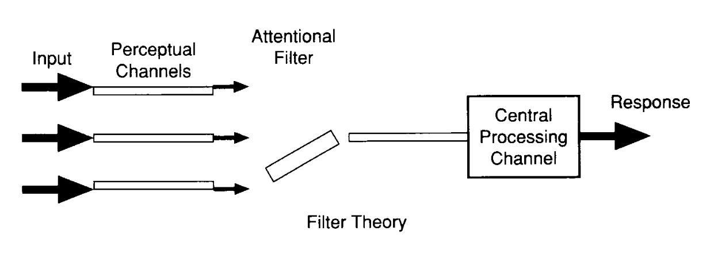
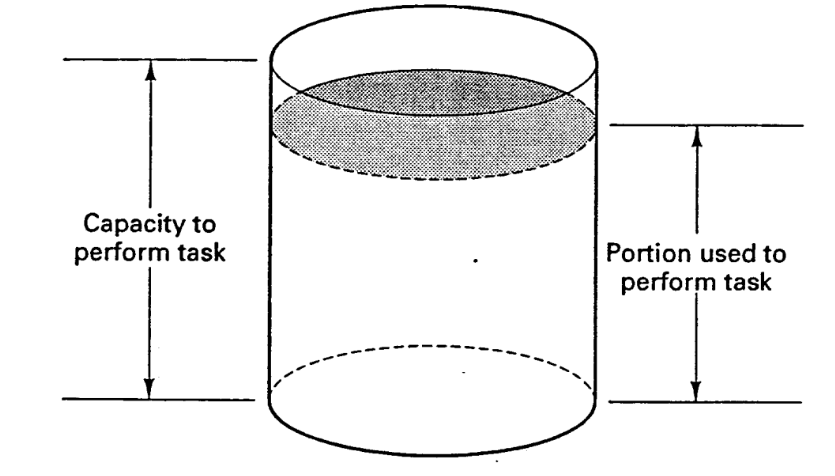

Attention

Attention의 정의
- Attention acts as a means of
focusing limited mental resourceson the information and cognitive processes that aremost salient at a given moment - Focusing most salient at a given moment:
- 주의는
Search light로 비유됨 - 한 영역에
집중하면 다른 부분은배제.
- 주의는
Attention의 네 가지 주요 측면
- Selective, Focused, Divided, Sustained Attention은 독립적이지 않으며, 상호작용하여 주의 과정 형성.
Focused Attention (집중적 주의)
- 특정 과업에 집중하고, 외부 방해 요인을 배제하는 능력.
- 방해 요소(Distraction)를 최소화하여 현재 작업에 주의 집중.
- 예시:
- 냉장고에서 음식을 꺼내려는 도중 질문을 받으면 집중력이 분산되어 원래 작업을 잊어버릴 수 있음.
Divided Attention (분할 주의)
- 여러 작업을 동시에 수행하며 주의를 분배.
- Selective Attention과의 차이:
- Selective Attention: 특정 자극을 선택적으로 받아들임.
- Divided Attention: 여러 작업 간 우선순위를 메기고
주의 자원 분배.
- 예시:
- 운전 중 대화하며 라디오 듣기.
- 각 작업에 필요한 시간과 노력을 어떻게 배분할지를 결정.
Sustained Attention (지속적 주의)
- 주의가 높거나 낮거나보다는, 장시간 동안 주의를 유지하는 능력.
- 높은 주의 레벨 필요 시:
- 정보를 놓치는 경우가 발생할 가능성이 높음.
- 여러 정보와 자극을 동시에 처리.
- 예: 주식 거래에서 여러 종목을 모니터링.
- 낮은 주의 레벨 시:
- 자극 부족으로 주의 산만 발생.
- 예: CCTV 감시 업무.
Selective Attention (선택적 주의)
- 여러 감각 자극 중 중요한 정보를 선택적으로 처리.
- 시각, 청각, 촉각 등 다양한 감각 경로를 통해 들어오는 자극에서 의미 있는 정보 선별.
- 예시:
- 운전 중:
- 표지판, 신호등, 앞차의 움직임 → 중요한 정보.
- 옆 보행자의 얼굴이나 주변 불필요한 자극 → 중요하지 않은 정보.
- 운전 중:
Mental Workload (정신적 작업 부하)
동시에 수행할 수 있는 과업이 몇 개인지 혹은이 과업이 수행하기에 attention scale을 넘어가는 것인지분석 용도측정 방법:
- 주관적 설문:
- 작업자가 느끼는 주관적 부담을 평가.
- 생체 반응 분석:
- 심박수, 뇌파 등 생리적 데이터를 활용.
- 부과 과업(parallel tasking):
- 추가 과업을 부여하여 작업 부하 평가.
- 예시:
- 운전 중 숫자 거꾸로 세기.
- 특정 숫자를 기억하고 응답(예: N-back 테스트).
- 주관적 설문:
워크로드 증가의 결과 특정 작업의 실패 확률 증가한다.
Attention의 결정 요인
의지- 개인의 목표와 필요에 따라 주의 집중.
- 예: 차선 변경 시 후방 차량 확인.
- captured by
salience and grouping- 공간, 강도, 색상, 크기, 음조 등 외부 요인.
- 강렬한 자극이 주의를 끌 가능성 높음.
Selective Attention
- 특정한 자극(예: 시각적 또는 청각적 정보)에 주의를 집중하며, 다른 자극을 배제하는 과정.
- 중요도에 따라 특정 정보를 선택적으로 처리하며 불필요한 정보는 억제.
- attention이 sensory memory로 부터 들어온 정보의
filter나gateway나bottle neck으로 작용한다고 봄
작동 원리
Top-down Processing(Mental model):- 개인의 경험과 목표에 기반하여 주의 집중 전략을 개발.
- 예: 초보 운전때 앞만 보고 가다가 숙련이 되면 사이드미러 같은 주변도 보게 됨.
Bottom-up Processing(자극 기반 처리):- 강렬하거나 눈에 띄는 자극에 주의가 끌림.
- 예: 갑작스러운 소리나 반짝이는 신호등.
- 결정 요인
Salience Source: 자극의 강도(밝기, 소리 크기 등).
Information Access Trade-offs: 특정 정보를 처리함으로써 얻는 이득.
Bottleneck Model
Early Selection Theory
- sensory memory까지는 잘 오지만, Attention filter에 선택이 된게 처리가 되고 나머지는 처리가 안 된다.
- 감각 단계에서 물리적 특성(의미가 아닌)을 기준으로 정보 필터링.
- 폐기된 정보는 행동에 미치는 영향 없음.
- 한계: 칵테일 파티 현상(의미 정보 처리 설명 불가).

Late Selection Theory
- 모든 정보가 cognition / working memory까지 전달 후 선택.
- 식별되지 않은 정보는 작업 기억의 제한된 용량으로 인해 빠르게 잊혀짐.
- 선택되지 않은 정보도 행동에 영향을 미침.
- 광고 실험 - 인지하지 못하는 정보(빠르게 잊어버려서)에 의해서도 행동의 변화가 있을 것이다.
Task
General orientation and scene scanning
- 그림을 보거나 웹 브라우징
감독 제어 (Supervisory Control)
- 자동화된 시스템에서 이상 징후를 탐지.
- 주로 AOI(Area of Interests)를 스캐닝 함.
AOI는 여러개가 있음. 시간, 중요도, 과업의 컨텍스트에 따라서 다르게 설정됨
specific task-related information이 있는 물리적 위치
AOI를 몇개를 만들고, 이들에 대한 시선의 이동을 어떻게 만들것인가가 중요한 issue - 예시:
자율주행 차량 또는 산업 기계 감독.
제어 패널에서 비정상적인 지표 확인 (예: 전력 공급 문제, 자원 부족).
탐지 (Noticing)
- 예상치 못한 사건이나 환경 변화 감지.
- 예시:
- CCTV로 비정상적인 활동 탐지.
- 주요 시스템 성능의 갑작스러운 변화 인식.
탐색 (Searching)
- 방해 요소 속에서 특정 목표를 찾는 활동.
- 예시:
- 공항에서 수하물의 X-ray 검색.
읽기 (Reading)
- 책이나 디스플레이에서 정보를 읽고 이해.
- 예시:
- 계기판의 게이지 읽기.
확인 (Confirming)
- 작업이나 과정의 결과를 확인.
- 예시:
- 비행기 바퀴가 잘 내려왔는지 확인
선택적 주의 과업 실패는 중요 정보를 놓치거나 잘못 해석하는 경우 발생할 수 있다.
SEEV Model
visual attention에 영향을 주는 요소들을 설명
Bottom-up factors
- Salience: cue의 특징
- Effort: AOI로 이동하는데 드는 비용
선형적으로 증가하는건 아니고, 그룹핑 할 수 있음.
(Within foveal vision) 중심시에서 초점 변화. 멀리있는거에서 가까이 있는거 보는거 < Eye movement < Head movement < Body
중요한 정보는 cost가 작은 쪽에 배치를 해야함.
Top-down factors
- Expectancy: 일어날 것 같은거에 주의를 더 많이 집중. mental model에 의해 예측 능력이 생길 수 있음.
- Value: 이것에 집중했을 때 얻는 이득, 보지 않았을 때 지불하는 비용
Guidline
- 중요한 AOI는 salience가 높아야함
- 사용
빈도가 높은 AOI 사이의 거리는 가까워야함 순차적인디스플레이도 서로 가깝게 배치해야함.
Change Blindness
발생 원인
멘탈 워크로드가 높은 경우- 눈에 띄는 변화(Slient change)는 발견하기 쉬움
중심시에서 멀리 떨어진 곳에서 변화가 발생하면 탐지하기 어렵다.시야 밖에서 일어나는 변화는 인지하기 어려움(화면이 깜빡이면서 변하면 animation 효과가 안나타남)예상치 못한 변화는 탐지하기 어려움.(top-down processing)- 특정 위치를 응시(
fixation)하고 있어도 집중(attention)이 부족하면 변화를 인지하지 못함.
Search Task의 유형
Serial Search- 하나씩 순차적으로 탐색, 탐색 시간이 항목 수에 비례.
- 예: 긴 텍스트 리스트에서 특정 단어 찾기. 같은 그림 2개 찾기
- 하나씩 순차적으로 탐색, 탐색 시간이 항목 수에 비례.
Parallel Search- 눈에 띄는 단서(pop-out effect)를 이용해 한 번에 탐색.
- 5 search items is the same for 50 search items
- preattentive process로 유발됨
- 눈에 띄는 단서(pop-out effect)를 이용해 한 번에 탐색.
- Parallel Search를 유도하는 방법
- 색상, 크기, 대비(contrast), 회전
- motion
- feature를 adding하는건 찾기 쉬운데 missing하는건 찾기 어려움
- O안에서 Q 찾기 vs Q안에서 O 찾기
- 깜빡이는 곳에서 안깜빡이는거 찾기 vs 안깜빡이는거에서 깜빡이는거 찾기
- O안에서 Q 찾기 vs Q안에서 O 찾기
- 색상, 크기, 대비(contrast), 회전
Divided Attention
개념
- 일반적으로 단순 작업보다는 멀티 태스킹이 많이 일어남.
- 단순 작업: 라면 끓일 때 진짜 라면만 순서대로 끓임. (멀티테스킹 x)
- 복잡 작업: 라면을 끓이면서 설거지도 하고, 반찬도 만들고, 카톡도 하고, … (멀티테스킹 o)
- 단순 작업: 라면 끓일 때 진짜 라면만 순서대로 끓임. (멀티테스킹 x)
- 여러 작업을 동시에 수행하면서 주의를 분배.
- Attention을 한계가 있는 자원으로 바라봄
Resource Model
Central Resource Theory:
주의 자원을 단일 통으로 간주. 예: 교차로 진입 시 운전에만 집중, 라디오 듣기같은 다른 작업은 집중을 못함.Multiple Resource Theory:
주의 자원이 감각기관의 특성, 과업의 특성에 따라 별개로 존재
예: 시각(도로), 청각(라디오) 자원을 분리 사용.
작업 간 유사성이 높을수록 분배 어려움.
예: 운전 중 영화 감상(둘 다 시각 자원 사용).
주의 자원과 훈련의 문제
주의 자원은 고정인가, 훈련으로 확장 가능한가?
- 리소스 차이는 명확히 증명되지 않았음.
전략을 통한 과업 배분 및 우선순위 설정 → 성능 향상.반복적 학습과 자동화→ 개별 과업 및 주의 배분이 자연스럽게 효율화.
Attention as capacity
- 어떤 정보를 얼마나 주의 깊게 받아들일지 결정
- 어떤 정보를 선택할 것인지는
disposition(형태), intentions, arousal, evaluation에 의존 - 받아들이는 정보의 특성(visual, auditory), 반응(manual, vocal)에 따라 리소스 풀을 나눌 수 있다.
tasks interfere to the degree that they tap into the same pool of resources
Unitary Resource Model (단일 자원 모델)

- 주의(attention)를 제한된 자원으로 봄
- 과업 수행에 필요한 자원의 양이 가용 자원을 초과하면 성능 저하
Multiple Resource Model (다중 자원 모델)
- 서로 다른 유형의 과업은 다른 자원을 사용
- 하지만 한쪽의 workload가 높으면 다른쪽에 영향을 미칠 수 있음.
- 비주얼 테스트 두 개를 수행하는 것이 비주얼-청각 테스트보다 더 어려움
- 한 객체의 두 가지 특징에 주의를 기울이는 것이 두 객체의 한 가지 특징에 주의를 기울이는 것보다 쉬움
Ex) 특성을 여러 막대로 보여주는것보다 육각형으로 보여주는게 더 보기 쉬움
Perceptual Modalities
- Auditory,Visual, and Tactile Perceptual modalities에 사용하는 resource가 전부 다름
- Visual은
Focal과 Ambient가 서로 다른 자원을 사용함 - Cross-modality가 15%정도 더 효과가 있음
- tactile은 auditory랑 비슷함.
coding
spatial,verbalauditory verbal verbalandvisual spatial manualis efficient- verbal은 단 너무 길면 좋지 않다.
- 모든 채널에서 다 쓸 수는 없다. (tactile 같은 경우에는 verbal 코딩이 없음)
Attentional Allocation during Time-sharing: Skill or Ability?
If skill:
Attentional allocation should be trainable
Skills developed in one task transfer to unrelated tasks.If ability:
No evidence supports the existence of a universal “multitasking ability.”
People excel at specific tasks due to familiarity and automation, not inherent multitasking talent.
Practical Implications
Operator training:
Training must develop automaticity in single-task skills to reduce resource demand
Training of attentional allocation and time-sharing will help dual-task performanceOperator selection:
time-sharing ability가 좋은 사람을 선택하는 것보다는 single-task performance가 좋고 자동화가 잘 사람을 선택하는 것이 더 좋음
System design이나 multi-task performance를 측정할 때 좋은 것
Task analysis나 multiple resource model를 사용하는 것이 좋다.
Task의 어떤 면이 효율적으로 time-shared 될 것인가?
Task의 어떤 면이 interference를 일으킬 것인가?
interference를 최소화하기 위해 어떻게 디자인 해야하나?
ex) driving할 때 손과 발을 따로 사용하게 하기Time-sharing efficiency, task performance, and mental workload를 고려해야한다
(멘탈 워크로드 측정은 아직도 쉽지 않다.)